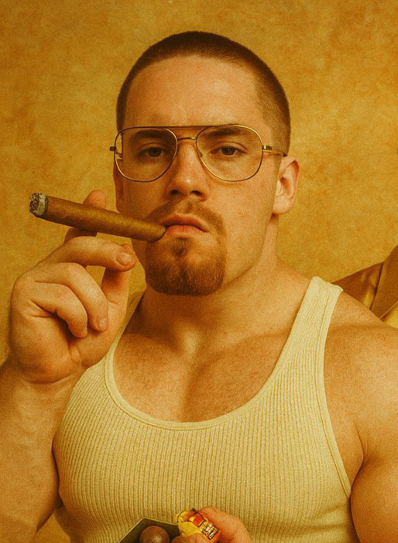
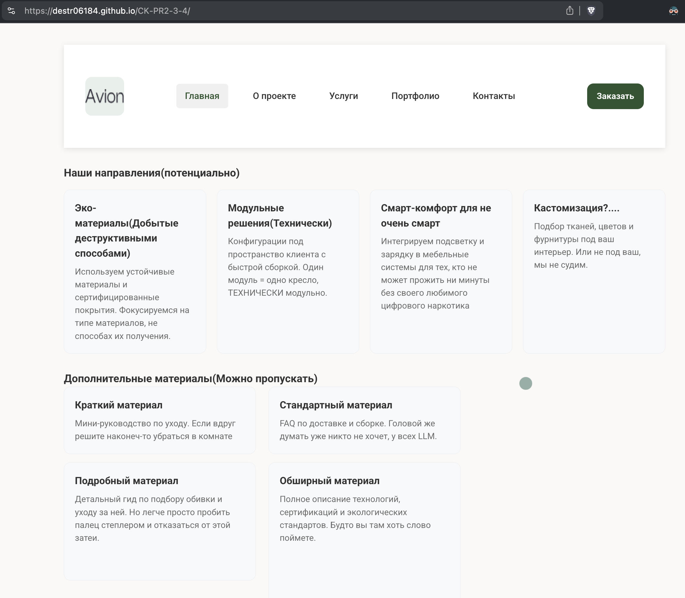
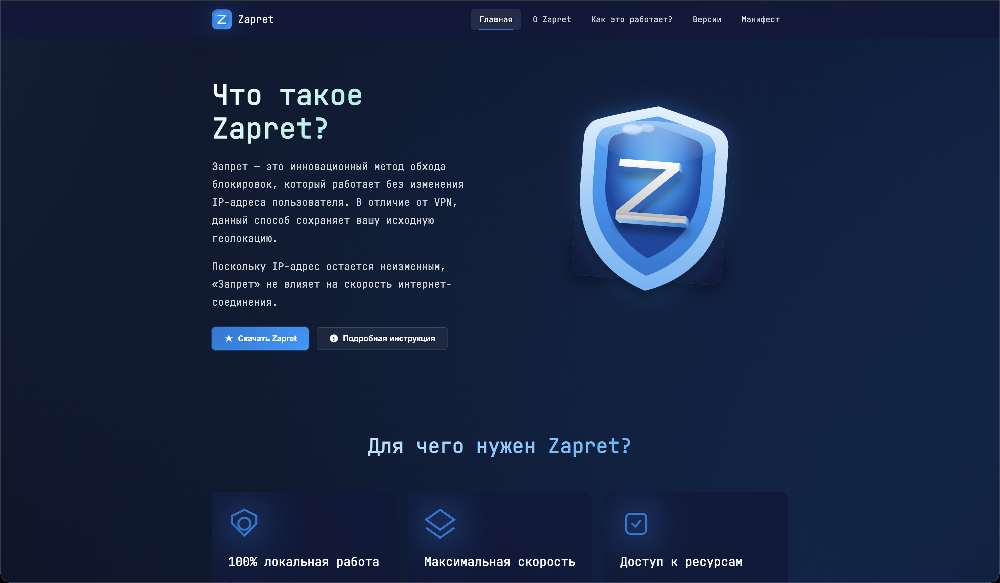
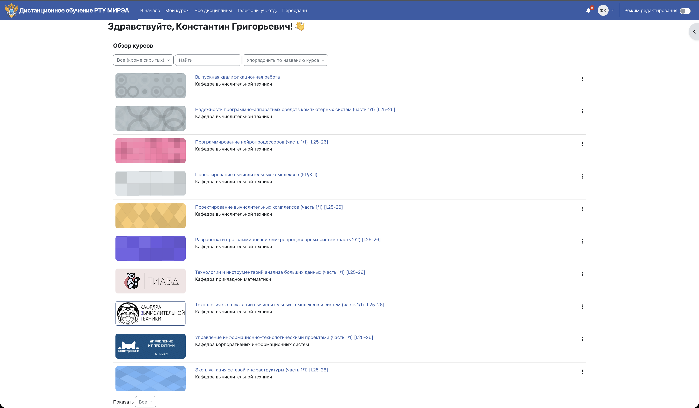

Навигация «как дизайнер чувствовал»
Меню есть. Понимание - не очень.
Портфолио дизайнера
Мой стиль - минимализм с максимальным уровнем «почему так?!». (До уровня гос. порталов и СДО еще не дошел, стремлюсь.) Визуально чисто, эмоционально больно (но валидно и адаптивно, если не лень делать или воровать).

Специализация: «случайно нажал не туда» и «не понял, где назад».
Это портфолио демонстрирует подход «анти-UX»: решения выглядят аккуратно, но заставляют пользователя задуматься о смысле жизни и обвинить браузер в сломанной верстке.
При этом страница сохраняет базовую доступность: логичная структура, якоря, фокус по Tab и заметные состояния элементов, мы же хотим чтобы даже пользователи без рук смогли вдоволь насладится нашим созданием!
Визуально минималистично. Внутренне - испытание характера.
Меню есть. Понимание - не очень.
CTA работает, но формулировка слегка пугает(А кто меня остановит?).
Каждый текст ведет к следующему тексту.
Поля понятные. Сообщения об ошибках — философские, как и вся жизнь.
Воздуха ровно столько, чтобы не задохнуться.
Понятны всем, кроме всех.

Корзина есть. Но путь к ней — духовная практика. Дает время подумать, точно ли ее содержание стоит покупки
Хочу так же
Смысл раскрывается на третьем скролле.
Заказать
Данные точные. Интерпретация — на совести пользователя.
ОбсудитьЗапрос на проект принимается через форму ниже. Ответ приходит быстро(наверное), но вопросы будут неудобные.
Кнопка отправки демонстрационная, нажимайте сколько угодно, бэкенд я не писал.